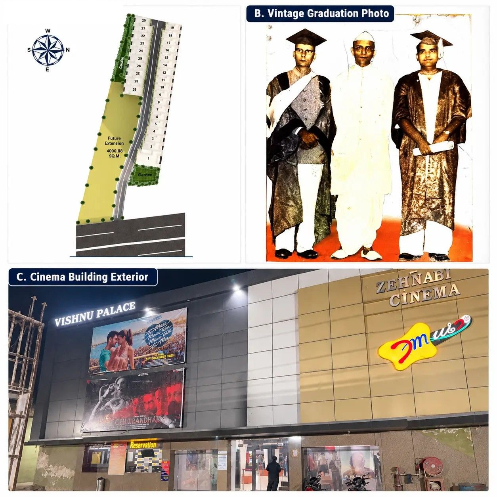

Our Legacy
Vishnu Developers & Infrastructure is a forward-thinking real estate development company committed to creating exceptional residential, commercial, healthcare, and mixed-use developments that enrich lives, generate lasting value, and redefine luxury living.
Founded with a vision to transform urban landscapes through innovation and excellence, the company combines thoughtful planning, contemporary design, quality construction, and sustainable development practices to deliver projects that meet the evolving aspirations of homeowners, businesses, and investors.
Our expertise spans the complete development lifecycle, including land acquisition, project planning, design development, construction management, and property delivery. Every project is executed with meticulous attention to quality, safety, regulatory compliance, and timely completion, ensuring long-term value and customer satisfaction.
At Vishnu Developers & Infrastructure, integrity, transparency, and trust form the foundation of our business. Our experienced team works closely with leading architects, engineers, consultants, and construction professionals to create developments that are both functional and aesthetically distinguished. We believe that every project should contribute positively to the communities in which we build, reflecting our guiding philosophy:
"We Nurture Your Dreams."
As we continue to grow, our focus remains on delivering sustainable, innovative, and high-quality developments while building enduring relationships with customers, investors, partners, and communities. Through excellence in execution and continuous improvement, we aspire to be one of the most trusted and respected names in the real estate industry.
Vision and Mission
Our Vision
To create an experience of luxury, comfort, and quality living by transforming aspirations into thoughtfully designed spaces, while creating lasting value and a sense of pride for our residents and investors.
Our Mission
Our mission is to create high-quality, thoughtfully planned, innovative, and future-ready developments while maintaining a strong commitment to customer satisfaction, responsible development, quality execution, and lasting relationships. We strive to combine contemporary design, practical functionality, professional expertise, and responsible development practices to create spaces that people are proud to call their own.